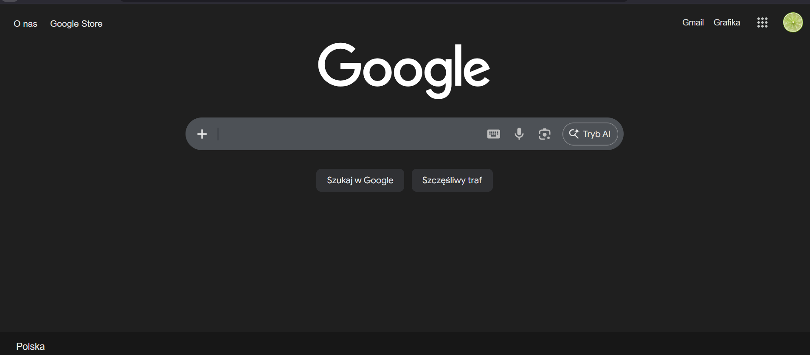
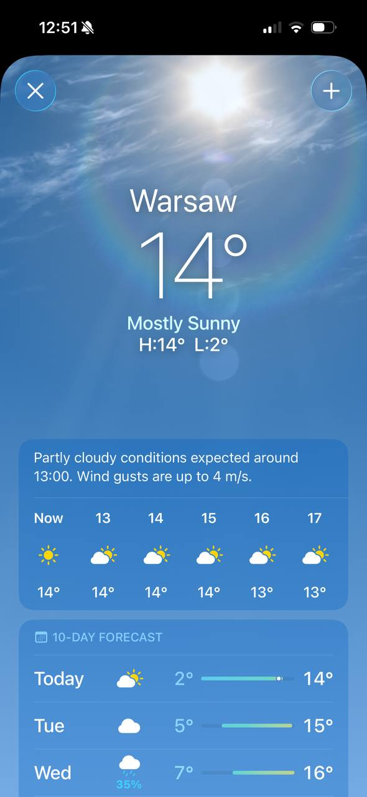

8. Estetyka i umiar
EN: Aesthetic and minimalist design. Interfaces should not contain information that is irrelevant or rarely needed. Every extra unit of information in an interface competes with the relevant units of information.
PL: Estetyka i umiar. Interfejsy nie powinny zawierać informacji nieistotnych lub rzadko potrzebnych. Każda zbędna informacja konkuruje z tymi ważnymi i zmniejsza ich widoczność.
Przykład 1: Strona Internetowa (Desktop)

Uzasadnienie: Skupienie na jednym polu wyszukiwania eliminuje szum informacyjny i pozwala natychmiast przejść do celu.
Przykład 2: Aplikacja Mobilna

Uzasadnienie: Wyświetlanie tylko kluczowych danych (temperatura, opady) bez zbędnych ozdobników ułatwia szybki odczyt informacji.